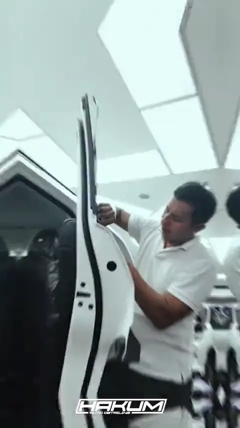
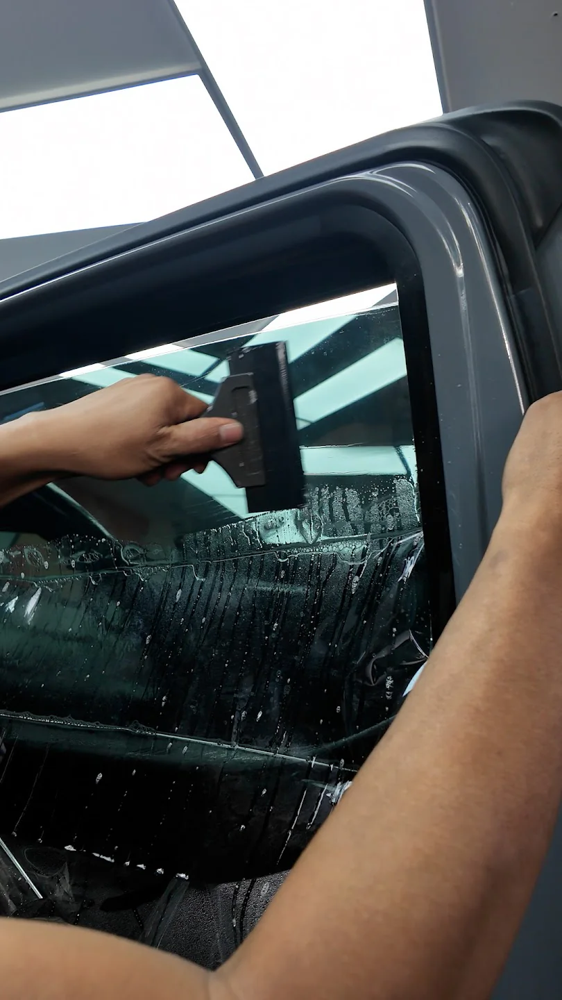
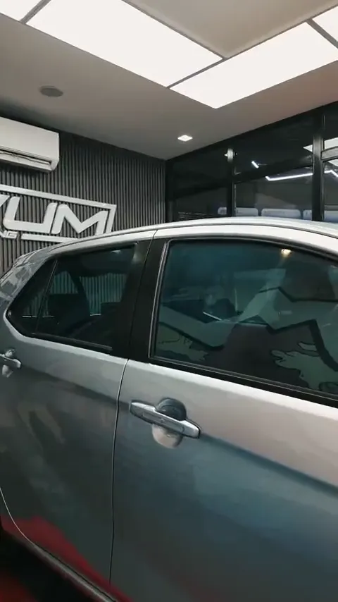

Your drive.
Your tint.
Four quick questions. The right combinations for your comfort, priorities and vehicle.

Inside Hakum / Nano ceramic tintYour drive.
Your tint.
Four quick questions. The right combinations for your comfort, priorities and vehicle.
- Night driving
- Eyesight
- Your priority
- Your vehicle
Your tint options.
Before you choose
Why choose
nano ceramic tint?
Explore the advantages of nano ceramic film. Your priorities lead the way.
Finished at Hakum.
Real tint work from our own bays. Care in progress and vehicles ready for the road.



Nano ceramic
tint FAQs.
What do the film numbers mean?
VLT measures visible light transmission: a higher number lets more light through. TSER is total solar energy rejection, IRR is infrared rejection and UVR is ultraviolet rejection. Film-only values differ from readings on installed glass.
Can I choose different shades for front and rear?
Yes. The finder recommends front windshield and front-door film paired with a rear-door and rear-windshield film. Clear Bluish is used on all windows. Your installer will confirm your final selection.
Which tint is suitable for night driving?
Your eyesight and visibility needs guide the recommendation. Darker films can reduce visibility at night or in heavy rain. Try the finder, then discuss your comfort with our installer.
What does the package price include?
The reference price covers the full-window tint package for your selected vehicle size. Nano Ceramic has a 7-year warranty; Nano Ceramic Pro has a lifetime warranty. Final pricing and warranty terms are confirmed at the branch.